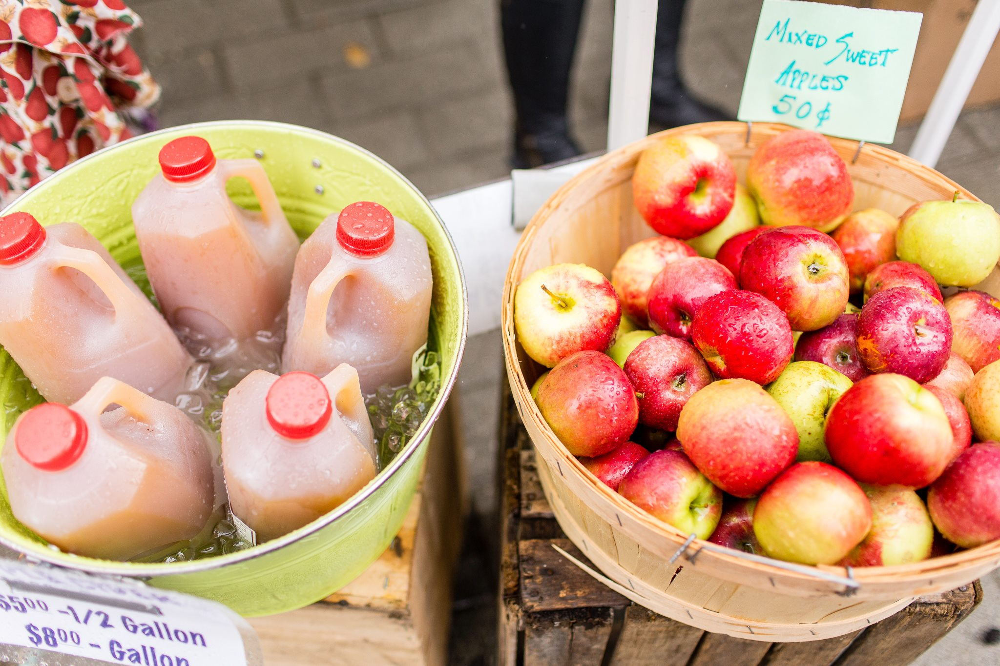

The Presented Tompkins Trust Company is excited to announce that Ithaca's premier event of the fall, Apple Harvest Festival, is here yet again!
The 34th Annual Great Downtown Ithaca Apple Harvest Festival is set to take place from September 30, 2016 to October 2, 2016. It will host plenty of apples, local produce, freshly baked goods, games, rides, prizes, and live performances on two stages. Apple Harvest Festival is a great introduction to the rich artist community of Ithaca, so come to the three-day celebration to indulge in apples, fun, and endless opportunities for taking aesthetical photos!